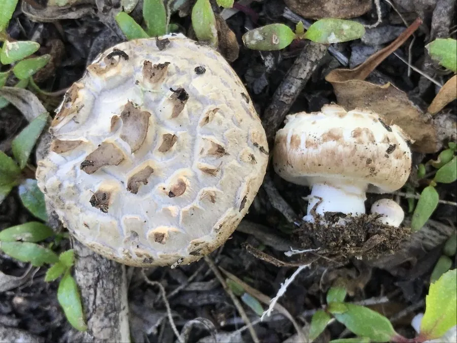

真菌 · 真菌界
双孢蘑菇 Agaricus bisporus

双孢蘑菇是世界上栽培最广泛的食用菌，菌盖洁白、菌褶褐色，常见于超市货架，可鲜食或加工成罐头。
- 分类
- 门担子菌门纲伞菌纲目伞菌目科蘑菇科属蘑菇属
- 栖息环境
- 草地、堆肥堆与人工培养料上，喜温暖湿润、通风环境
- 地理分布
- 原产欧洲与北美，现中国、美国、荷兰等地普遍栽培
- 保护级别
- 暂无评估（栽培食用菌）
物种志
双孢蘑菇是担子菌门伞菌目的草腐真菌，子实体单生或丛生。菌盖初期半球形，后平展，直径 5–15 cm，白色或淡褐色，表面光滑或略有鳞片；菌肉白色，厚实；菌褶初期粉红色，后变为深褐色至黑褐色；菌柄短粗，白色，圆柱形，基部稍膨大；菌环膜质，白色。孢子印深褐色。因每个担子上多生两个担孢子而得名“双孢”。
双孢蘑菇野生于草地、堆肥和林缘腐殖质丰富处，靠分解秸秆、畜禽粪便等有机物生长。它原产欧洲和北美，17 世纪法国人开始在洞穴中人工栽培，如今已成为全球产量最大的栽培食用菌，中国是最大的生产国和出口国。栽培以麦秸、稻草和粪肥发酵制成的培养料为主，需控温控湿。双孢蘑菇肉质肥厚、味道鲜美，可鲜食、罐藏和干制，是西餐和中餐都常用的食材。
形态与习性
- 菌盖直径 5–15 cm，白色或淡褐色
- 菌褶由粉红色渐变为深褐色
- 菌柄短粗，有白色膜质菌环
- 孢子印深褐色
- 栽培秸秆与粪肥发酵培养料
- 采收期菌盖尚未开伞时
- 特点每个担子通常只生两个担孢子
趣味知识
- “双孢”之名来自它的担子通常只产生两个担孢子，而多数蘑菇是四个。
- 双孢蘑菇的菌褶会随成熟从粉红变成深褐色，是判断成熟度的依据之一。
- 法国人最早在废弃的洞穴里栽培双孢蘑菇，如今它已是全球产量最大的食用菌。